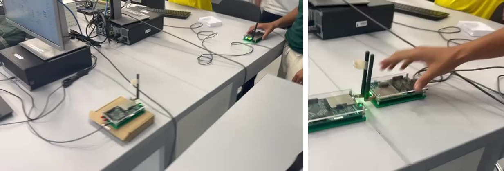
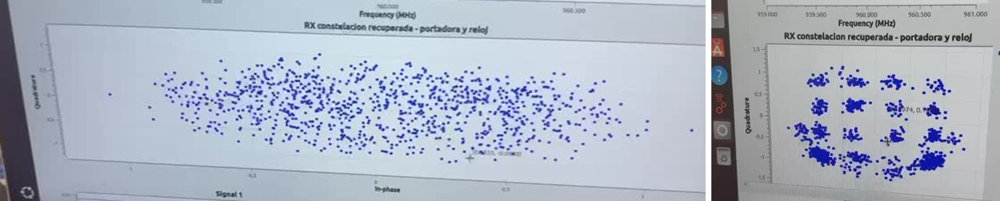
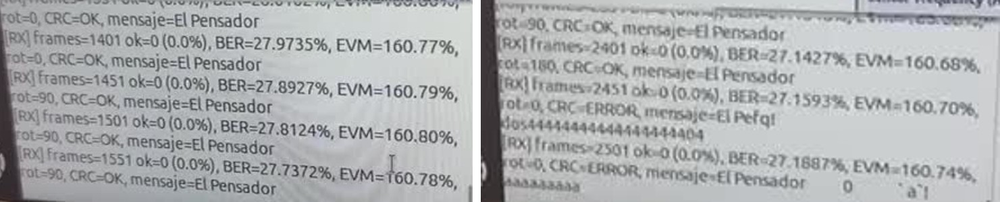
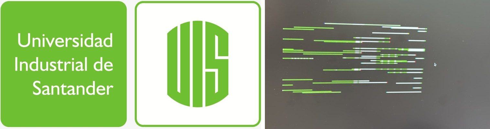

Comunicaciones II · Proyecto Integrador 2026 · Escenario S5
¿Por qué un receptor FSK falla con 24 dB de Eb/N0? Telemetría binaria en una planta de agua
“La presente Divulgación Pública de la Ciencia, a través del siguiente Desarrollo Web, tiene una ruta de circulación nacional sin enfoque diferencial y está dirigido a la comunidad o público objetivo conformado por jóvenes, adultos, empresarios y/o empresa en género literario informativo de tipo Blog, con componente digital a través de soporte web”.

Pregunta guía: ¿qué necesita un receptor no coherente de BFSK para recuperar sin errores los bits de un nodo lejano cuando el ruido es comparable a la señal?
Escenario y problema
Una planta de tratamiento de agua supervisa niveles de tanques, estados de bombas y posiciones de válvulas desde una sala de control, a distancias de 80 a 300 m.
Cablear cada punto es costoso, así que se usan nodos inalámbricos de bajo consumo en bandas ISM sub-GHz. En esas bandas son habituales 2-FSK y GFSK, por ejemplo en Wireless M-Bus para la lectura remota de medidores [3], [5]. Cada nodo envía tramas cortas: estados binarios y medidas lentas.
Fenómeno físico. Al aumentar la distancia, la potencia recibida cae hasta acercarse al ruido térmico del receptor. Ese ruido es aproximadamente gaussiano, blanco y aditivo, por lo que se modela como AWGN: r[n] = x[n] + w[n]. En GNU Radio se controla con noise_voltage del bloque Channel Model.
Lectura de la imagen. Tx1, Tx2 y Tx3 son los nodos con antena; las líneas discontinuas son los caminos directos hacia la antena Rx; el recuadro rojo es la perturbación modelada. El muro de concreto y la tubería metálica indican el entorno, aunque esta versión del proyecto no modela multitrayectoria.
Diseño técnico
Modulación elegida: BFSK de fase continua. Su envolvente es constante (permite amplificadores no lineales eficientes) y admite detección no coherente con un discriminador, sin recuperar la fase de la portadora. Alternativa descartada: BPSK. Necesita unos 4 dB menos de Eb/N0 y ocupa menos espectro, pero exige recuperar portadora y fase con osciladores baratos. A 10 kbit/s esa complejidad no se justifica.
h = 2Δf/Rs = 2·10 kHz / 10 kHz = 2 · B ≈ 2(Δf + Rs) = 40 kHz (Carson)
La desviación de la base (20 kHz) se redujo a 10 kHz: con h = 2 los tonos siguen siendo ortogonales y el ancho de banda baja de 60 a 40 kHz. Con 10 kbit/s, 40 nodos que envían dos tramas de 64 bits por segundo ocupan el 51 % de la capacidad.


GNU Radio
Partimos de Guia2_BASE_FSK_Canal_Discriminador.grc y creamos S5_BFSK_TxCanalRx_GrupoE1.grc. El transmisor y el canal se conservan; el receptor es nuestro.

- Filtro de selección de canal (FIR paso bajo, corte 20 kHz, 241 coeficientes): deja pasar la banda útil y elimina el 96 % del ruido.
- Quadrature Demod con ganancia fs/(2πΔf): convierte la frecuencia instantánea en niveles ±1.
- Moving Average de 100 muestras: integra cada símbolo; es el filtro acoplado al pulso rectangular.
- Skip Head (20) + Keep One in N (100): toma la última muestra de cada ventana, donde el ojo está más abierto.
- Binary Slicer con umbral 0, más una rama de validación con XOR y BER sobre 1000 bits.
El retardo del filtro (120 muestras) se compensa en R1 con un bloque Delay, de modo que ambos receptores usan el mismo instante de muestreo y la misma referencia (1 bit de retardo).
Experimentos y resultados
Cambiamos una sola variable, noise_voltage, en cuatro niveles. Todo lo demás quedó fijo.
| Prueba | Severidad | noise_voltage | SNR en 1 MHz | Eb/N0 | BER R1 | BER R2 |
|---|---|---|---|---|---|---|
| A | Referencia | 0 | ∞ | ∞ | 0 | 0 |
| B | Suave | 0.3 | 10.5 dB | 30.5 dB | 0 | 0 |
| C | Media | 0.6 | 4.4 dB | 24.4 dB | 2.4 × 10⁻² | 0 |
| D | Fuerte | 0.8 | 1.9 dB | 21.9 dB | 1.3 × 10⁻¹ | 0 |
Lo que encontramos. Con 24 dB de Eb/N0, un detector ideal no comete errores. Aun así, R1 falla porque su discriminador ve todo el ruido de 1 MHz: con 4.4 dB de SNR queda por debajo del umbral de unos 10 dB [4]. Aparecen clicks, saltos de fase de casi 2π que el integrador no logra borrar. R2 filtra antes de detectar, gana unos 14 dB de SNR y no comete errores.

Verificación en GNU Radio
Ejecutamos el GRC en GNU Radio 3.10.12 y repetimos las cuatro pruebas con los dos receptores. Las capturas de la prueba C muestran lo mismo que el modelo: con R1 los clicks tapan la salida del discriminador y aparecen errores; con R2 la señal sigue la referencia y el ojo queda abierto.


Las cifras de BER provienen de un modelo numérico en Python que reproduce la cadena del GRC con los mismos retardos y la misma regla de muestreo (10⁵ bits por prueba). El código está en la carpeta simulacion_referencia/ del repositorio. Luego ejecutamos el GRC en GNU Radio 3.10.12: A y B sin errores; en C, R1 = 0.022–0.033 y R2 = 0; en D, R1 = 0.155–0.169 y R2 = 0, en línea con el modelo.
Del simulador al aire: prueba real con HackRF
Una simulación no tiene osciladores que se desafinan ni antenas que reciben ruido del salón. Por eso, en la Fase 4 del proyecto, el curso pasó a radios reales: dos HackRF One, cada uno conectado a un computador distinto, enviándose datos por aire en 960 MHz.
Un grupo manejó el transmisor y el nuestro, el receptor. Ambos usaron flujogramas de GNU Radio con modulación 16-QAM, que agrupa los bits de a cuatro y los envía como 16 combinaciones de amplitud y fase. Se hicieron dos pruebas: primero un mensaje corto de texto y después una imagen.

Video 1: el mensaje “El Pensador”
Qué se ve. Al principio la constelación del receptor es una nube de puntos sin forma: los dos radios no oscilan exactamente a la misma frecuencia y el receptor todavía no ha corregido esa diferencia. A los pocos segundos los lazos de sincronización se ajustan y aparecen los 16 grupos de la 16-QAM.

Desde ese momento la consola repite CRC=OK, mensaje=El Pensador. Cada trama lleva un código CRC-32 que funciona como huella digital: si un solo bit cambia en el camino, la huella no coincide. Así se ve en algunas líneas, donde el texto llega alterado (“El Pefq!...”) y el receptor lo marca como CRC=ERROR en lugar de darlo por bueno.

Un detalle que enseña mucho. El flujograma traía por defecto el texto “LAB GNU RADIO 16QAM HACKRF 2026”, y nosotros lo cambiamos por “El Pensador”. El medidor de BER y EVM siguió comparando contra el texto original, así que en la consola aparecen BER ≈ 28 % y EVM ≈ 161 %: miden la diferencia entre los dos textos, no el ruido del canal. Lo que muestra la calidad real del enlace son los CRC válidos y los 16 grupos de la constelación.
Video 2: el logo de la UIS, franja por franja
Qué se transmitió. El logo se redujo a 160 × 80 píxeles y se partió en 300 paquetes de 128 bytes, que se envían una y otra vez. Cada paquete dice qué parte de la imagen lleva, así que el receptor puede colocarlo en su sitio aunque se pierdan otros.

Qué se observa. La imagen aparece poco a poco, en franjas verdes y blancas en su posición correcta. Tras unas 19 400 tramas, solo 52 habían pasado el CRC (0.3 %) y se había recuperado el 15 % del logo. El EVM, que aquí sí se mide contra los datos correctos, fue de 16.7 %: un MER de unos 15.5 dB.
¿Por qué el texto llegaba seguido y la imagen tan despacio? Un paquete solo sirve si todos sus símbolos llegan bien. Con esa calidad de señal, la probabilidad de acertar los 104 símbolos del mensaje corto ronda el 31 %, pero la de acertar los 288 de un paquete de imagen baja al 4 %. En la práctica fue todavía menor, porque el receptor también perdía la sincronía por momentos. A ese ritmo, completar el logo habría tomado varias horas.
Lo que nos llevamos. Pasar del simulador al aire funcionó: el enlace se sincronizó, entregó el mensaje y empezó a armar la imagen. También mostró que, con una señal regular, el tamaño del paquete importa tanto como la potencia, y que una medición solo vale si el receptor compara contra lo que de verdad se envió.
Laboratorio interactivo
Prueba el enlace tú mismo. Esta simulación corre en tu navegador con la misma cadena del GRC: modulador CPFSK, canal AWGN, filtro de canal (solo R2), discriminador, integrador y decisión con umbral 0.
La BER se estima con 3000 bits aleatorios en cada cambio, así que puede variar un poco entre ejecuciones. Prueba subir el ruido con R1 y luego cambiar a R2: es el resultado principal del proyecto.
Reto: ¿habrá errores?
Te mostramos un escenario. Antes de simular, predice qué pasará. Son 5 rondas.
Pulsa “Empezar” para la primera ronda.
Glosario
Haz clic en cada término para ver su definición.
BFSK / CPFSK
Modulación por desplazamiento de frecuencia binaria: el bit 1 se envía con un tono en +Δf y el bit 0 en −Δf. En CPFSK la fase es continua entre símbolos, lo que reduce los lóbulos laterales del espectro.
Índice de modulación h
h = 2Δf/Rs. Relaciona la separación de los tonos con la tasa de símbolos; con h entero los tonos son ortogonales. Aquí h = 2.
AWGN
Ruido blanco gaussiano aditivo: modelo del ruido térmico del receptor, con la misma potencia en todas las frecuencias. En GNU Radio se controla con noise_voltage.
Eb/N0
Energía por bit dividida por la densidad de ruido. Permite comparar modulaciones con distintas tasas; en este proyecto Eb/N0 = 100/σ².
BER
Tasa de error de bit: fracción de bits recibidos que no coinciden con los transmitidos. El GRC la estima en ventanas de 1000 bits.
Discriminador de frecuencia
Bloque que mide cuánto gira la fase entre dos muestras para obtener la frecuencia instantánea. En GNU Radio es Quadrature Demod.
Efecto umbral (clicks)
Cuando la SNR a la entrada del discriminador baja de unos 10 dB, el ruido hace saltar la fase casi 2π y aparecen impulsos en la salida. Es la causa de los errores de R1.
Diagrama de ojo
Superposición de muchos intervalos de símbolo. Donde el “ojo” está más abierto está el mejor instante para tomar la decisión.
Multimedia
Los dos videos de la prueba con HackRF están en la sección Prueba real con HackRF: mensaje “El Pensador” e imagen del logo UIS.
Fig. 1 · Escenario
Fig. 2 · Diagrama técnico
 Fig. 5 · PSD de referencia
Fig. 5 · PSD de referencia
 Fig. 7 · f instantánea (A)
Fig. 7 · f instantánea (A)
 Fig. 10 · Bits Tx y Rx (C)
Fig. 10 · Bits Tx y Rx (C)
 GNU Radio · PSD (A)
GNU Radio · PSD (A)
 GNU Radio · PSD (C, R2)
GNU Radio · PSD (C, R2)
 GNU Radio · discriminador (B, R1)
GNU Radio · discriminador (B, R1)
 GNU Radio · discriminador (D, R1)
GNU Radio · discriminador (D, R1)
 GNU Radio · BER 0.151 (D, R1)
GNU Radio · BER 0.151 (D, R1)
 GNU Radio · BER 0 (D, R2)
GNU Radio · BER 0 (D, R2)
 Fig. 13 · Envolvente compleja
Fig. 13 · Envolvente compleja
Bitácora y aprendizaje
Observamos envolvente, PSD y frecuencia instantánea de FSK, ideal y con AWGN. Vimos las espigas en la frecuencia instantánea, pero aún no sabíamos qué significaban para los bits.
Elegimos S5 y BFSK. Llenamos la ficha de Decisión Técnica Ciega con predicciones antes de simular.
Bajamos la desviación de 20 a 10 kHz (h = 2) para reducir el ancho de banda a 40 kHz sin perder ortogonalidad.
El primer receptor (discriminador + integrador + slicer) fallaba en la prueba C con Eb/N0 alta. Investigamos y encontramos el efecto umbral del discriminador.
Agregamos un filtro de selección de canal antes del discriminador. El retardo del filtro (120 muestras) desplazó los bits recuperados un bit respecto a la referencia; lo resolvimos con Skip Head = 120 mod 100, la referencia Tx retardada 1 bit y un Delay en R1.
Al ejecutar el GRC, cambiar de receptor con un bloque Selector desalineaba los flujos (BER ≈ 0.62). Lo reemplazamos por una mezcla ponderada en la que ambos caminos corren siempre. Con eso, los resultados en GNU Radio coinciden con el modelo.
Comparamos R1 y R2 en las cuatro pruebas y barrimos el ruido para encontrar el límite de R2.
Probamos un enlace 16-QAM real entre dos computadores. Cambiamos el mensaje del transmisor por “El Pensador” y lo recibimos con CRC válido; luego recibimos el 15 % del logo de la UIS. Aprendimos que la BER del receptor solo describe el canal si se compara contra lo que realmente se transmitió.
Reflexión metacognitiva
Qué aprendimos. Eb/N0 no basta para predecir la BER de un receptor real: importa cuánto ruido deja entrar cada etapa. El diagrama de ojo fue la herramienta que más nos ayudó a entender el instante de muestreo.
Qué cambiaríamos. Habríamos medido la SNR a la entrada del discriminador desde el principio, en lugar de mirar solo la salida.
Qué profundizaríamos. Sincronización con Symbol Sync, corrección de desfase de frecuencia, GFSK y ruido impulsivo de los motores de las bombas.
Uso de IA y herramientas
Usamos GNU Radio Companion 3.10, Python (NumPy, SciPy, Matplotlib), LaTeX y Git/GitHub. Usamos un asistente de IA (Claude, de Anthropic) para redactar borradores del informe y del blog, escribir el modelo numérico de referencia y generar las figuras esquemáticas.
Validación humana: el equipo revisó cada parámetro y cada cálculo, ejecutó el GRC en GNU Radio, comparó sus capturas con el modelo y es responsable del contenido final.
Referencias
- J. G. Proakis y M. Salehi, Digital Communications, 5.ª ed. New York, NY, USA: McGraw-Hill, 2008.
- B. Sklar, Digital Communications: Fundamentals and Applications, 2.ª ed. Upper Saddle River, NJ, USA: Prentice Hall, 2001.
- A. Harney, “Designing a wireless transceiver system to meet the Wireless M-Bus standard,” Analog Devices, Appl. Note AN-0987. analog.com
- M. A. Ahaneku, “FM threshold and methods of limiting its effect on performance,” Nigerian J. Technol., vol. 26, no. 1, pp. 5–11, mar. 2007. core.ac.uk
- STMicroelectronics, “Introduction to sub-1GHz,” STM32 MCU Wiki. wiki.st.com
- GNU Radio Project, documentación de bloques. wiki.gnuradio.org
Comentarios
¿Te quedó clara la explicación del efecto umbral? ¿Qué cambiarías en el receptor? Déjanos tu comentario o pregunta en el repositorio:
Abrir un comentario en GitHub Issues
También puedes comentar en el foro del aula virtual del curso, donde publicamos el enlace a este blog. Las opiniones que recibamos se resumirán aquí como retroalimentación.
Autoría y responsabilidad. Jorge Mario Sánchez Arévalo, Sebastián Díaz Zuleta y Ferney Esteban Vinasco Flórez declaramos que este trabajo es de nuestra autoría, que citamos las fuentes utilizadas, que declaramos el uso de herramientas de IA y que respondemos por la veracidad técnica del contenido.